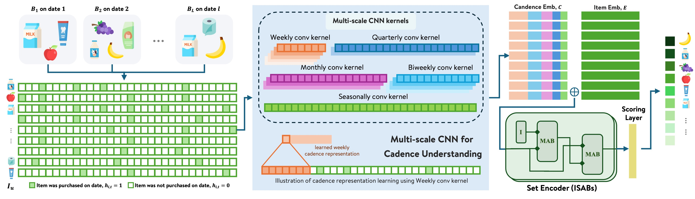
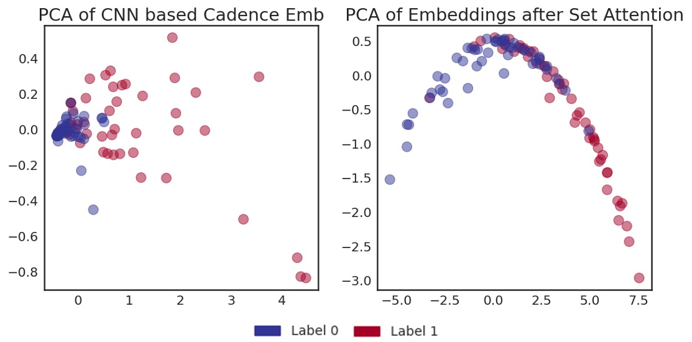

目录 · 9 节
1它到底在解决什么问题？2整体结构：按天的历史、共享卷积、集合注意力3按天的历史表示：让模型看到“过了几天”4多尺度卷积：从 0/1 序列里读出节奏5集合注意力：候选商品之间互相参考6实验：公开数据、消融和内部数据7我认为它的局限8一个复购推荐团队可以怎么试9评价分享 SHARE
做生鲜、日用品“再次购买”推荐的团队值得读这篇 CASE（Cadence-Aware Set Encoding），因为它指出了多数复购模型的一个结构性毛病，并给出了一个能在几千万用户上批量跑的改法。核心思想一句话：不按“第几次购物”而按“哪一天买的”来表示每个商品的购买历史，用全体用户共享的多尺度卷积学出复购节奏，再用一种省算力的集合注意力让候选商品之间互相参考。在沃尔玛内部大规模数据上，它相对线上排序模型的离线 Precision@5 提升 8.63%、Recall@5 提升 9.90%；在 Instacart 测试集的 3,744 个用户上推理耗时 19 秒，强基线 TIFUKNN 要 318 秒。
它到底在解决什么问题？
先看一个示意场景。小王每周买一次牛奶，每月买一次洗衣液。他上次买牛奶是 6 天前，上次买洗衣液是 10 天前。今天该给他推什么？显然牛奶快到期了，洗衣液还早。推早了，用户觉得推荐不相关；推晚了，他可能已经在别处买了。
论文要解决的是下一篮复购推荐（NBRR，Next Basket Repurchase Recommendation）：只在用户买过的商品里排序，预测下一次购物会再买哪些。问题出在大多数神经网络方法把历史表示成“第 1 篮、第 2 篮、第 3 篮”这样的序列，时间只体现在篮子的顺序里。于是第 1、8、36 天的三次购物，和第 1、2、3 天的三次购物，在模型眼里一模一样；而且只有发生新购物时预测才会变，两次购物之间的几天里分数不动，没法反映“这件商品是不是该补货了”。
另一类强方法是基于近邻的 TIFUKNN：给每个用户算带时间衰减的商品向量，找相似用户汇总他们的购买。效果好，但每次推理都要和全体用户比相似度，几千万用户时算不动。还有一些工作已经用了按天的表示，但要么每个用户一套卷积参数，规模上不去；要么没有在商品层面提取多尺度节奏。
整体结构：按天的历史、共享卷积、集合注意力

| 部件 | 输入 | 做什么 | 输出 |
|---|---|---|---|
| 按天的历史 | 用户每个买过的商品的购买日期 | 在最近 T 天的窗口里，那天买了记 1，没买记 0 | 每个商品一条长度 T 的 0/1 序列 |
| 多尺度卷积 | 0/1 序列 | 五种窗口宽度的卷积，全体用户共享参数 | 节奏向量 （128 维） |
| 集合编码 | 节奏向量拼上商品 embedding （128 维） | 两层 ISAB，让候选商品互相参考 | 每个商品的表示 （256 维） |
| 打分 | 两层 MLP | 复购分，按分排序 |
整个模型没有任何“每个用户一份”的参数，用户多了也不会变大，这是它能批量推理的前提。
按天的历史表示：让模型看到“过了几天”
为什么要换？ 按篮子顺序表示时，时间间隔被抹掉了；按天表示，间隔就直接写在序列里。窗口是滚动的，每过一天，序列整体往前挪一格，同一个用户即使没有新购物，模型也能给出新的排序。这让分数可以在两次购物之间每天更新，正是线上补货提醒需要的。论文没说训练时这个窗口截止到哪一天（最后一次历史购买日，还是目标篮发生的那天），也没说推理时窗口怎样和当天对齐。按我的理解，训练窗口截止到目标篮当天前一天、把中间的空白天也放进输入，才和线上每天刷新时模型看到的一致。
怎么做？ 对用户买过的每个商品 ，构造一个 维的 0/1 向量 ，第 天买了就是 1。论文只把它写作 天的滚动窗口；最大的卷积窗口是 182 天，所以 至少要有半年。
在两个没有真实日期的公开数据集（Instacart 和 DC（由零售商 Dunnhumby 公开交易数据整理的数据集））上，作者用“距上次下单几天”这类字段反推出相对日期，再构造这条序列；TaFeng 和内部数据保留了真实时间戳。
多尺度卷积：从 0/1 序列里读出节奏
怎么做？ 在 上用五种宽度的一维卷积：周（7 天）、双周（14 天）、月（28 天）、季度（91 天）、半年趋势（182 天）。每种卷积的步长等于窗口宽度，也就是把序列切成互不重叠的段，每段输出一个值，所以每个尺度得到 个激活。五个尺度的激活拼起来，过两层带 ReLU 的全连接，得到 128 维的节奏向量 。
举一个示意例子：假设 天（这个值是我设的），每个尺度的段数是：周 52、双周 26、月 13、季度 4、半年 2，合计 97 个位置。小王的牛奶每周买一次，周尺度上 52 段几乎每段都有购买；洗衣液每月一次，周尺度上大约每 4 段才亮一段，月尺度上每段都亮。两种商品在不同尺度上的“亮法”不同，全连接层据此区分“周期短的”和“周期长的”，也能从最后几段是否已经亮过，看出离上次购买过了多久。
为什么共享参数？ 卷积核对全体用户、全体商品是同一套，学到的是“周买型”“月买型”这类人群层面的规律，而不是某个人的习惯。新用户只要有几次购买记录就能用上这些规律，而且参数量和用户数无关。之前按用户单独学卷积核的方法，规模上去后参数会爆炸。
集合注意力：候选商品之间互相参考
为什么需要？ 用户的候选商品是一个无序集合，不是序列。商品之间又有关联：买了意面往往也买番茄酱，两者的补货时间会互相印证。
怎么做？ 用 Set Transformer 里的 ISAB（Induced Set Attention Block）。普通自注意力让 个商品两两交互，复杂度是 。ISAB 引入 个可学习的“诱导点”：先让这 个点去看全部 个商品，汇总成 个摘要；再让每个商品回头看这 个摘要。复杂度降到 。论文用两层 ISAB，，4 个注意力头。
再举一个示意例子：某用户有 200 个买过的商品。普通自注意力要算 200×200=40,000 对；ISAB 两步各算 200×32=6,400 对，合计 12,800 对，约为前者的三分之一。商品越多，省得越多。
训练用二元交叉熵：用户历史商品里，出现在下一篮的是正样本，没出现的是负样本。其余超参数：Adam，学习率 ，batch 64，训练 30 轮，ISAB 层和打分层后加 0.1 的 dropout。
实验：公开数据、消融和内部数据
四个生鲜数据集覆盖了不同的稀疏程度：
| 数据集 | 用户 | 商品 | 每人篮数 | 每篮商品数 |
|---|---|---|---|---|
| Instacart | 18,739 | 37,522 | 16.7 | 10.07 |
| TaFeng | 7,227 | 18,703 | 7.52 | 6.58 |
| DC | 123,935 | 852 | — | 1.60 |
| 内部数据 | 10,308 | 88,812 | 43 | 11.72 |
评测按用户划分训练和测试集，每个用户的最后一篮作为目标，候选只限于这个用户买过的商品。对照组有五个：按历史购买次数排序的 PersonalTop、近邻方法 TIFUKNN、按篮子顺序建模的 DNNTSP（在商品共现图上做图聚合，再按篮子顺序做时间注意力）和 BERT4NBR（把 BERT4Rec 改到下一篮场景），以及作者团队之前的 PIETSP（按时间步对商品历史做集合聚合，但没有多尺度节奏提取）。
下面挑出 Precision@1 和 NDCG@10 对比 CASE 和每个数据集上最强的对照：
| 数据集 | 指标 | 最强对照 | CASE | 相对提升 |
|---|---|---|---|---|
| TaFeng | Precision@1 | PIETSP 0.2507 | 0.2897 | +15.6% |
| TaFeng | NDCG@10 | PIETSP 0.3801 | 0.4021 | +5.8% |
| DC | Precision@1 | PIETSP 0.3886 | 0.3904 | +0.5% |
| Instacart | Precision@1 | TIFUKNN 0.5489 | 0.5478 | −0.2% |
| Instacart | NDCG@10 | TIFUKNN 0.5189 | 0.5241 | +1.0% |
| 内部数据 | NDCG@10 | TIFUKNN 0.3543 | 0.3514 | −0.8% |
这说明 CASE 的优势集中在稀疏的 TaFeng 上，作者的解释是购买次数少时，近邻汇总不可靠，按天的节奏信号更稳。在历史丰富的 Instacart 和内部数据上，它和 TIFUKNN 基本打平，个别指标还略低。按篮子顺序建模的 DNNTSP 和 BERT4NBR 在 DC、Instacart 和内部数据上普遍落后，有时还不如只按购买次数排序的 PersonalTop。这说明按篮子顺序表示时间是结构性短板，模型再复杂也补不回来。
CASE 真正的卖点是“打平 TIFUKNN 的同时能上线”。推理复杂度上，CASE 每个用户是 ，和用户总数无关；TIFUKNN 每次查询要和全体用户比，是 。实测在 Instacart 的 3,744 个测试用户上，CASE 用 19 秒，TIFUKNN 用 318 秒，约 17 倍。
消融在 Instacart 上做：
| 模型 | Precision@1 | NDCG@10 |
|---|---|---|
| 完整 CASE | 0.5478 | 0.5241 |
| 去掉多尺度卷积 | 0.3333 | 0.3297 |
| 去掉集合编码 | 0.5232 | 0.5152 |
| 去掉商品 embedding | 0.5390 | 0.5161 |
| 集合编码换成均值池化 | 0.5414 | 0.5225 |
去掉卷积后 Precision@1 从 0.5478 掉到 0.3333，低于 PersonalTop 的 0.5019。这说明按天的节奏是这个模型最主要的信号来源，其余部件是在它之上做补充；没有时间信息，商品 embedding 加集合注意力连“按次数排序”都比不过。去掉商品 embedding 只掉了 0.009，这说明线上可以不依赖庞大、需要频繁刷新的 embedding 表，对商品库持续增长的业务是好消息。ISAB 比均值池化好一点，但差距很小。

作者用图 2 说明卷积已经按节奏把正负样本分开，集合注意力让边界更清楚。这只是 100 个点的二维投影，看个大概即可。
最后是内部数据的对比，对照组是沃尔玛线上用的排序模型，带人工设计的复购特征，候选流程和数据规模相同：
| K | Precision@K | Recall@K | NDCG@K |
|---|---|---|---|
| 5 | +8.63% | +9.90% | +10.46% |
| 10 | +6.78% | +7.95% | +9.40% |
| 20 | +5.27% | +6.32% | +8.75% |
这说明在真实规模上，按天的节奏建模相对人工复购特征有可观提升，而且 K 越小提升越大，对位置有限的推荐位更有意义。
我认为它的局限
第一，还没有线上 A/B。表 3 是离线的相对提升，作者自己也说线上实验在计划中。离线指标的提升能否转成点击和购买，目前没有证据。
第二，相对 TIFUKNN 的效果优势很小。在 Instacart 和内部数据这两个最接近真实业务的数据集上，CASE 和 TIFUKNN 互有高低，差距在 1% 左右。它的真正价值在推理成本，而 19 秒对 318 秒只是一次实测，和实现方式有很大关系。
第三，复现时有几处要自己定，比如窗口长度 和每个尺度的卷积通道数，原文只用符号 表示窗口，通道数则没有出现。只对买过的商品排序，新商品和第一次购买不在模型范围内；作者也承认，节奏被打乱的情况（比如在别的渠道买了、生活习惯变了）还没有专门研究。
一个复购推荐团队可以怎么试
- 先确认业务里复购占比够高。如果下一篮里大部分商品都是以前买过的，这个方向才值得做。
- 把现有的按篮子顺序的历史，改成按天的 0/1 序列，窗口至少半年，先只加多尺度卷积和一个简单打分层，和现有模型离线比。消融说明这一步拿到的是大头。
- 再加集合编码。先用均值池化，再换 ISAB，看提升是否值得多出的复杂度。
- 线上做每天刷新的批量推理，重点看“该补货的商品是否在合适的那几天排到前面”，比如按距上次购买的天数分桶看命中率。
- 线上 A/B 用 Precision@5 这类小位置指标做离线门槛，再看实际点击和购买。
评价
对复购推荐，把时间从“第几篮”改成“第几天”，比换更复杂的序列模型更重要。
| 维度 | 评价 |
|---|---|
| 问题重要性 | 高。生鲜和日用品的下一篮里大量商品是复购，时机决定体验 |
| 方法创新性 | 中。按天表示、多尺度卷积、ISAB 都有前作，新的是组合起来并保持全体共享参数 |
| 实验证据 | 中。四个数据集加消融，消融结论很清楚；但相对最强对照优势小，内部结果只有离线 |
| 工程成本 | 低。模型小，没有按用户的参数，推理和用户总数无关 |
| 是否值得尝试 | 复购占比高、现有模型按篮子顺序表示时间的团队值得先试多尺度卷积这一步 |
读完这篇，你觉得
夜读鸮记下了，谢谢你的反馈。
点一下即可，无需登录；再点一次撤回。只统计匿名次数，不记录你是谁。
讨论
欢迎补充实验细节、复现经验或不同看法。需 GitHub 登录。
正在加载讨论…